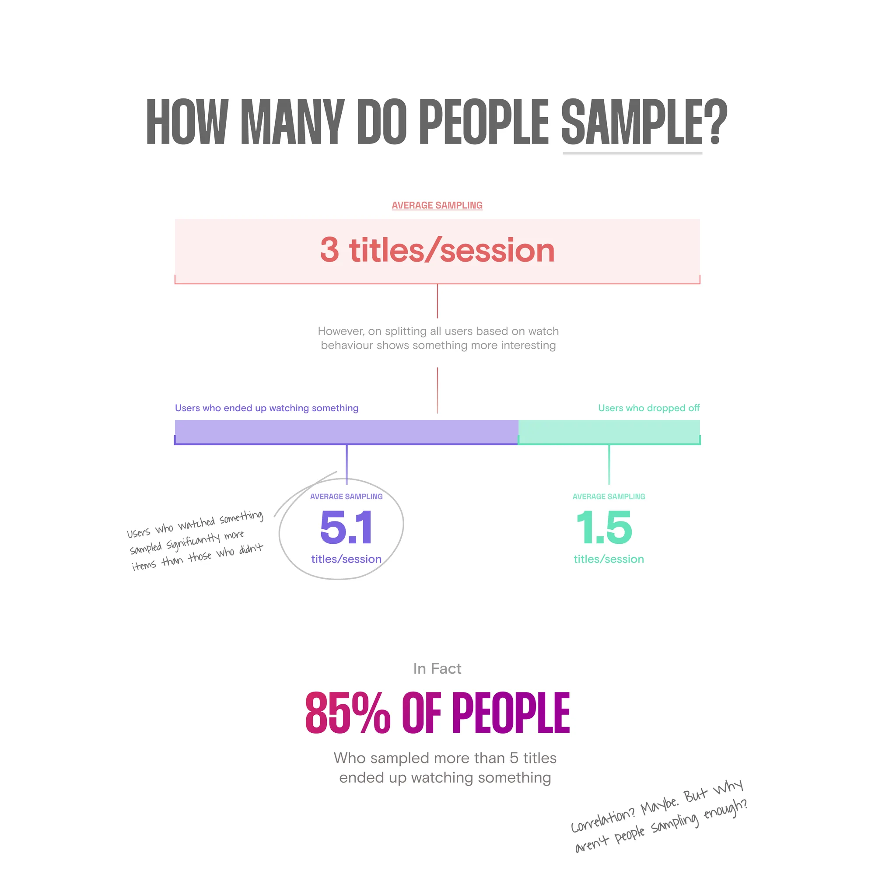
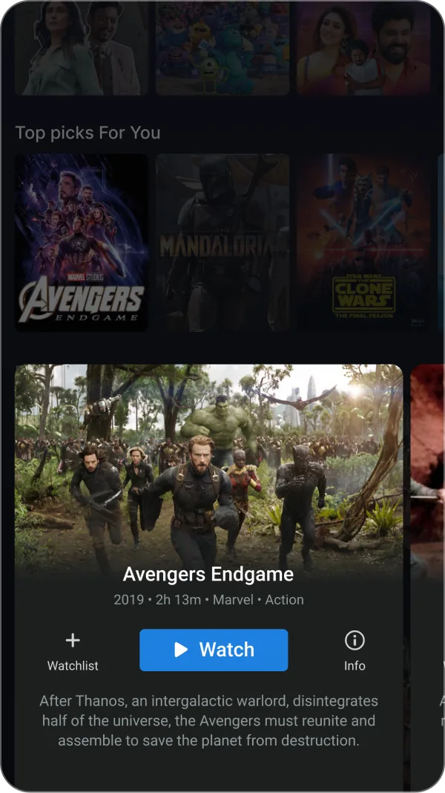
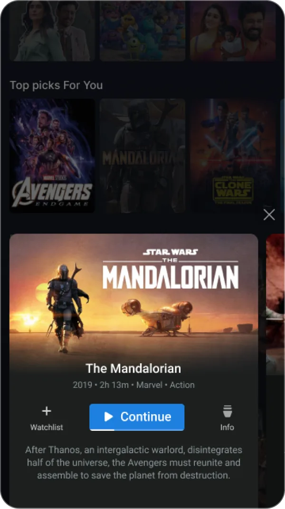
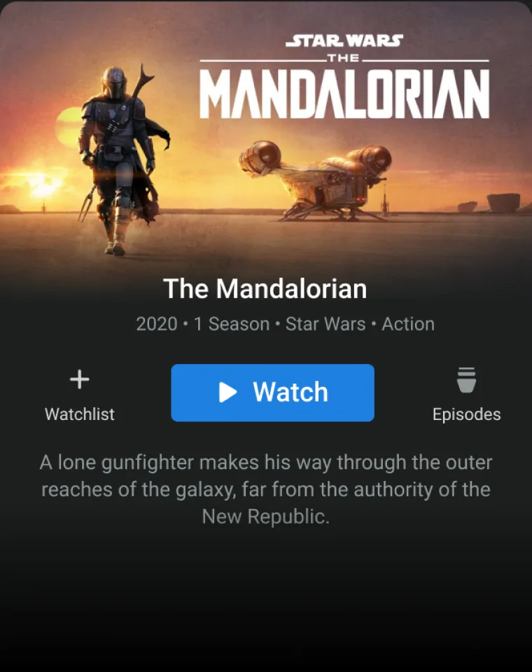
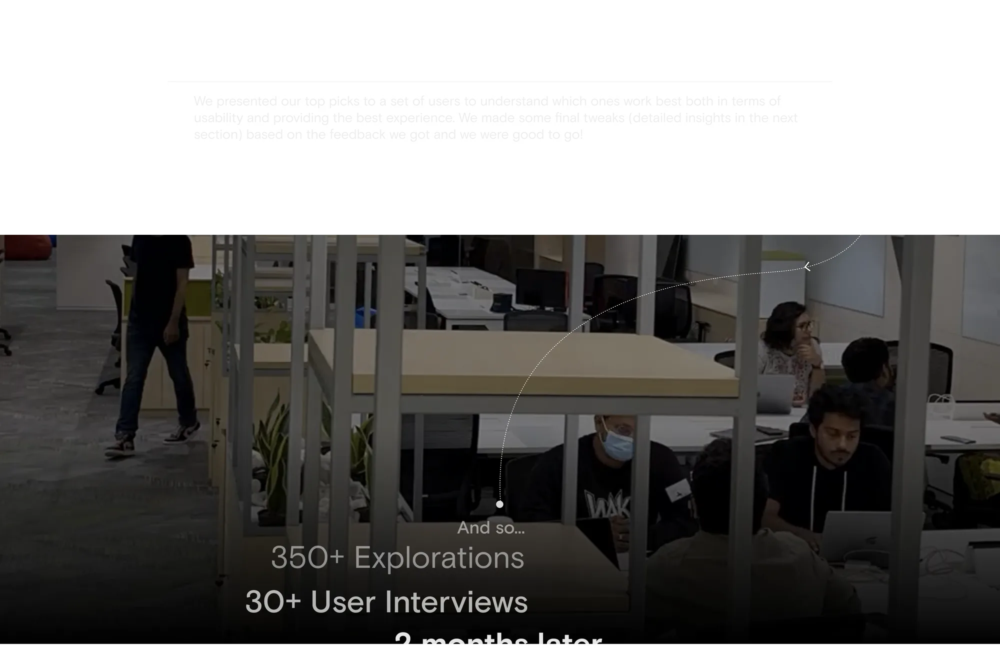
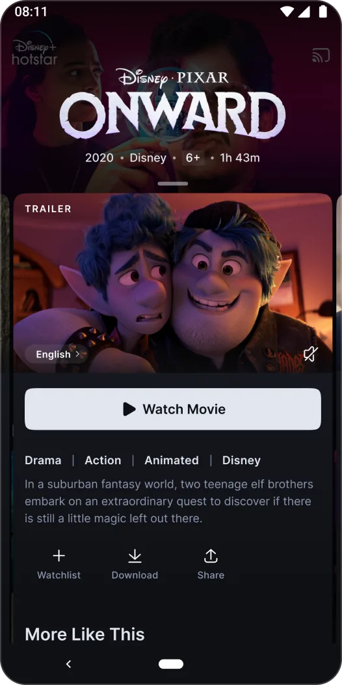
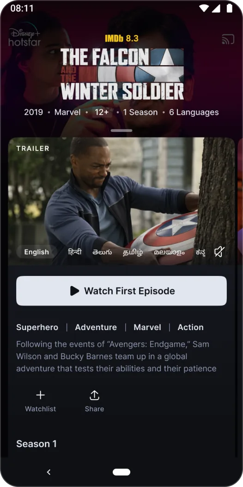
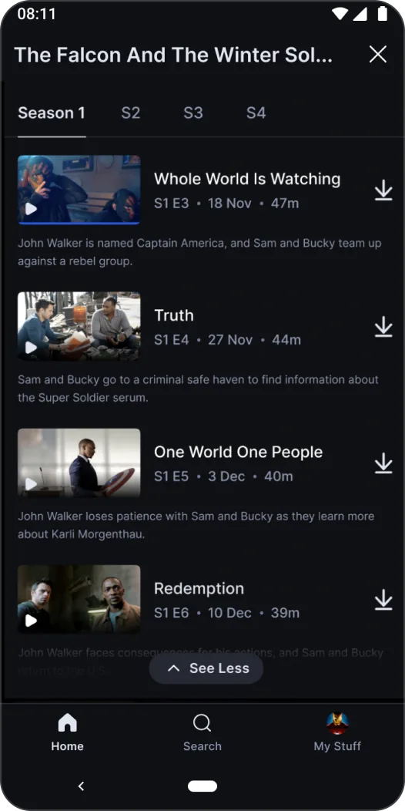
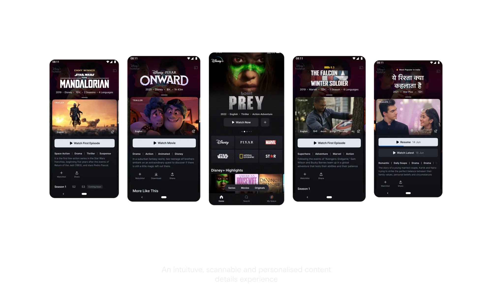

7,000 titles. A third of people leaving empty-handed.
People who watched had looked around first. Every sample meant loading a full page and coming back.
- Daily drop-off
- 35% Left without streaming.
- Watchers sampled
- 5.1 Titles per session.
- Leavers sampled
- 1.5 Titles per session.

A swipeable preview on top of the home feed.
Lift distinct titles viewed by 35%. Hurt show starts and downloads — the sheet was movie-shaped.



Rebuild the content-details page from how people decide.
Movies and shows needed different shapes. Episodes, trailer, and watch CTA had to earn their place.





Cheaper looks. More watches.
- Titles viewed (1.0)
- +35% Distinct titles per session.
- Show starts (2.0)
- +6.2% Vs Browse Sheet 1.0.
- Watchlist (2.0)
- +7% Vs Browse Sheet 1.0.
Next time
Don't ship a movie-shaped sheet for a catalogue full of shows. Format differences belong in the first experiment.